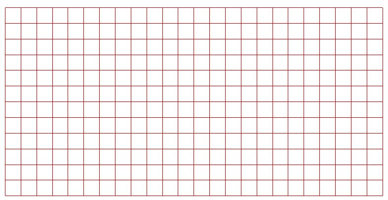
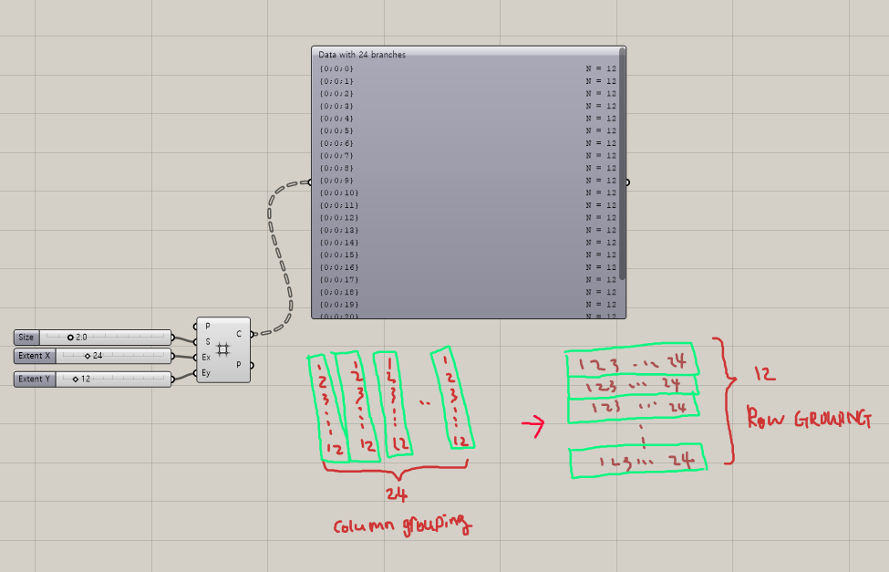
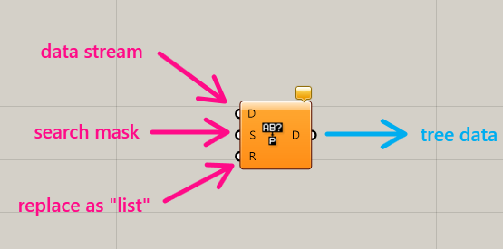
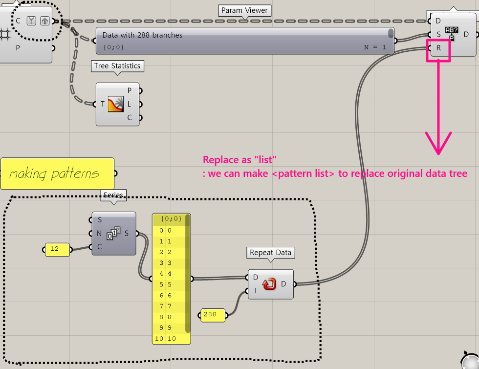
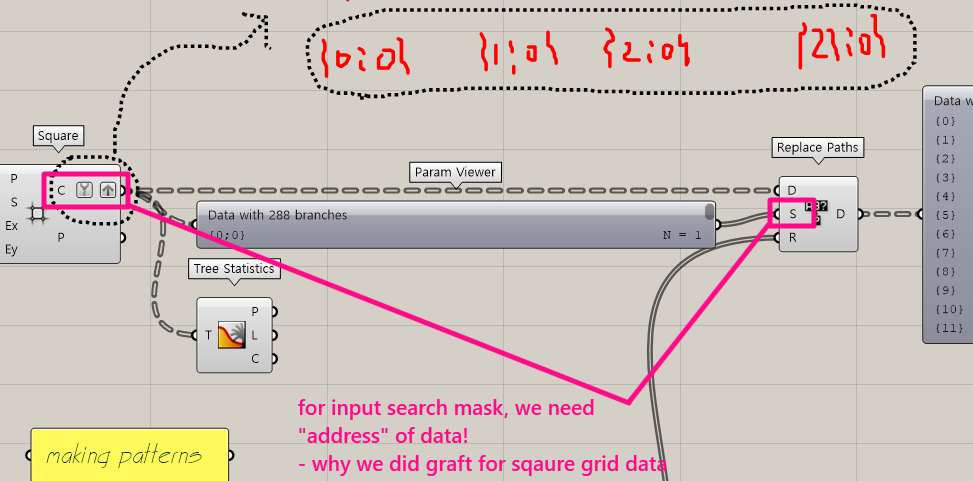
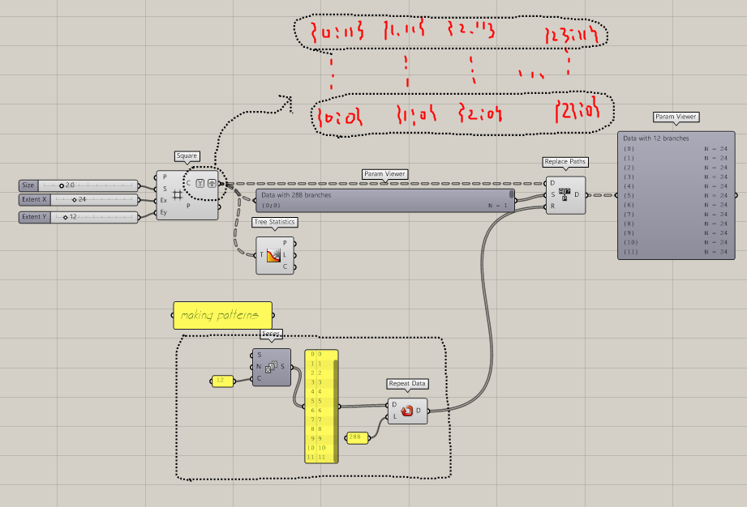

Component Review: Replace Paths
In real life making groups are very ordinary job. That's why making and manipulating groups in grasshopper is important.
In this article I want to introduce a very powerful component which is frequently used in grouping data.
The component is Replace paths.
Here, I made some grid and you can find out original data structure.
Total 24 branch, 12 items in each branch.


By the way as you can see in the below sketch, out goal is to make total 12 branch, 24 items in each.
In other words, I want to change column based data structure to row based data structure.
As I noticed earlier, we will use Replace Paths componet. Firstly then let's take a look for it.

We need three inputs for this. First, D = Data, S = Search Mask, R = Replace as list.
Then while using this, how can we change our data structure?
We need some materials. We need to make list patterns that mimics new data structure.
In this example we used component repeat data.

However, two more inputs are missed. But first one, it's easy. We can just putin our original data.
Then the second one, what is Search mask? At first I was quite confused about this concept.
Search mask stands for an address of original data tree. Be cafeful that's why we always have to use Tree statistics or Parm Viewer components to find out it's address.

Okay. We all take a look for important inputs. Here, we can find our final script. As you can see below, original column data structure changed into row data structure.
